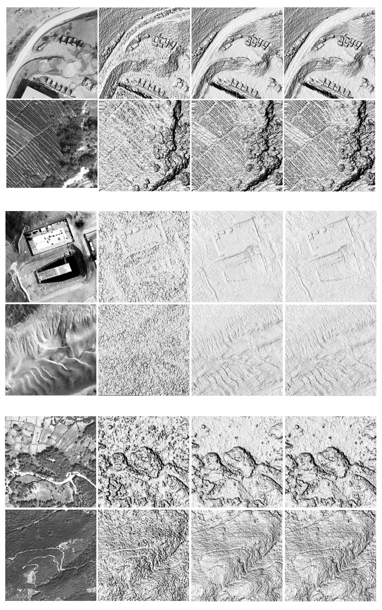
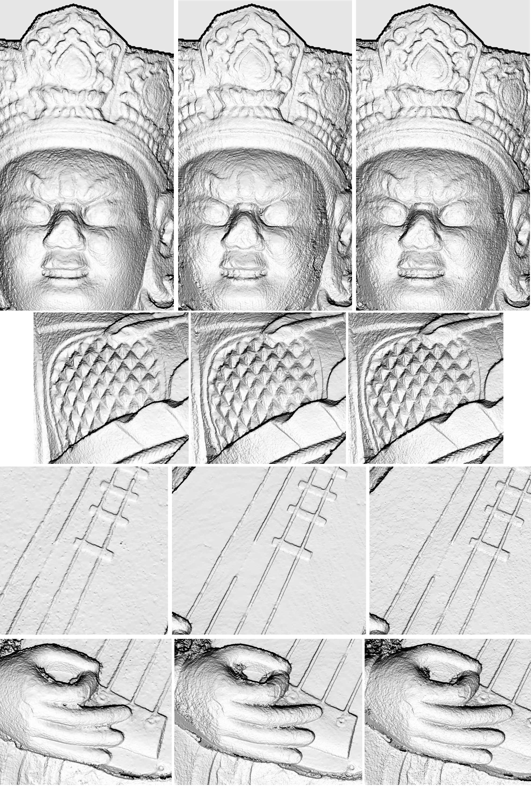

Research on fine surface reconstruction
Photogrammetrically derived Digital Surface Models have been widely adopted in geoscientific applications such as mapping and change detection across volcanic surfaces, glaciers, areas of seismic activity, forests, river landforms etc. Resolution of the reconstructed surface is crucial as more accurate information enables more profound understanding of the phenomena. With this objective in mind, the research presented here proposes a new matching cost function that produces surfaces of enhanced resolution with respect to the gold standard: the window-based semi-global matching technique. We evaluate the algorithm on different image datasets spanning various acquisition geometries, radiometric qualities and ground sample distance sizes. In particular, results on Earth satellites (SPOT-7, Pleiades), extraterrestrial (Chang'E3 moon landing), aerial and terrestrial acquisitions are shown. The implementation of the method is available in MicMac - the free open-source software for photogrammetry.
Regardez la version anglaise
Algorithm
In this work we aim to develop enhanced precision depth reconstruction free from fronto-parallel artefacts and with good performance at surface discontinuities. To realise this goal we:
- Formulate a new matching cost defined over a single pixel,
- Adopt a second pixel to add context and allow for slope testing with minimum information (a slope is defined by two points in 3D space and it is tested with exactly two pixels),
- Embed the image dense matching in a semi-global matching framework which favours slope coherence in the neighbourhood of a point and ensures surface continuity in poorly textured areas,
- Define the matching cost in a multi-view constraint to increase the robustness of the reconstruction.
Results
Comparison between different reconstruction methods

Publications
- Rupnik, E., Pierrot Deseilligny, M., 2019. More surface detail with One-Two-Pixel Matching. hal-02371337.